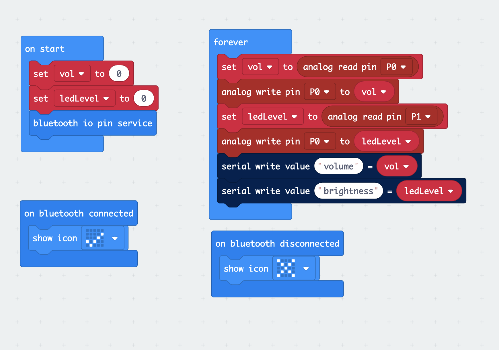
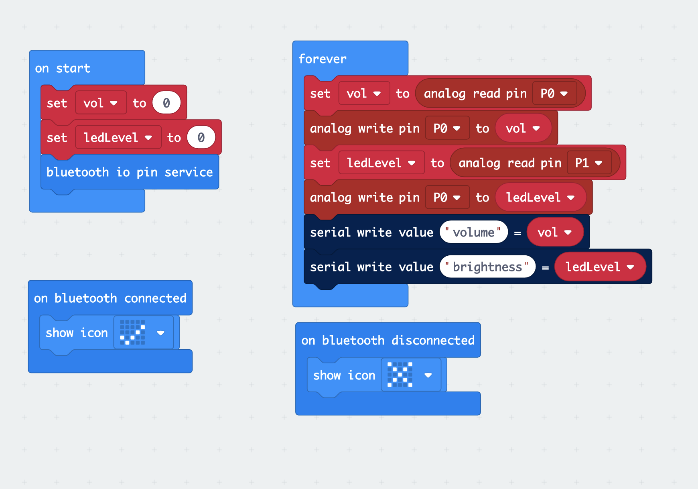

Microbit Project Progress
We tried to connect our microbit to bluetooth.

And we tidied up our thoughts from last week.

What happens when your realise that your code starts getting complicated and repetitive? This is where Object-Oriented Progamming (OOP) comes into play! Besides that, we also learned about how to make a Neopixel (aka a strip of LED lights?) change colour. However, one disadvantage is that Bluetooth does not work on the Microbit while Neopixel is in use.
We tried to connect our microbit to bluetooth.

And we tidied up our thoughts from last week.